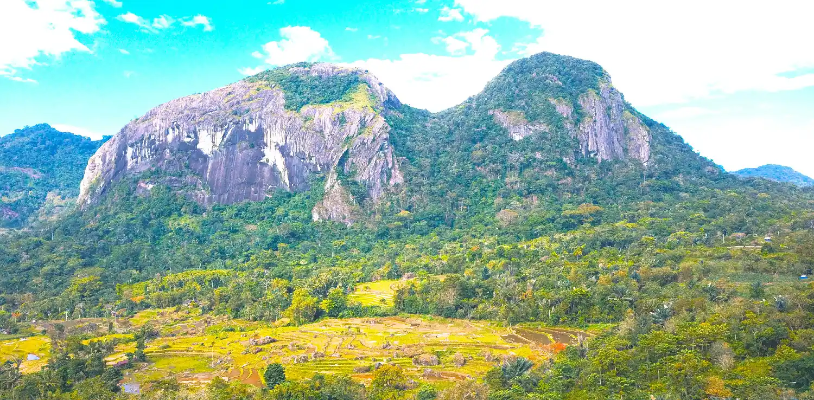
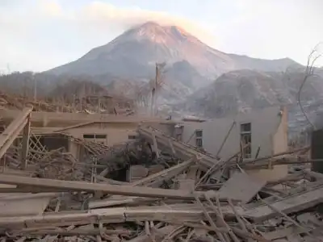

Gambar 5.1: Dampak Positif (Wisata alam, udara bersih).

Gambar 5.2: Dampak Negatif (Banjir, longsor).
Engineering: Saringan Air Darurat
Buat saringan air darurat menggunakan botol plastik, kapas/tisu, pasir halus, arang, dan kerikil. Tujuannya adalah mengamati bagaimana kita bisa mengatasi dampak air kotor (misalnya setelah banjir).
Art: Menggambar Dampak Positif & Negatif
Bagilah kertas gambar menjadi dua: sisi kiri untuk Dampak Positif (petani panen, wisata pantai) dan sisi kanan untuk Dampak Negatif (gunung meletus, banjir). Gunakan warna yang kontras untuk memperjelas pesan.